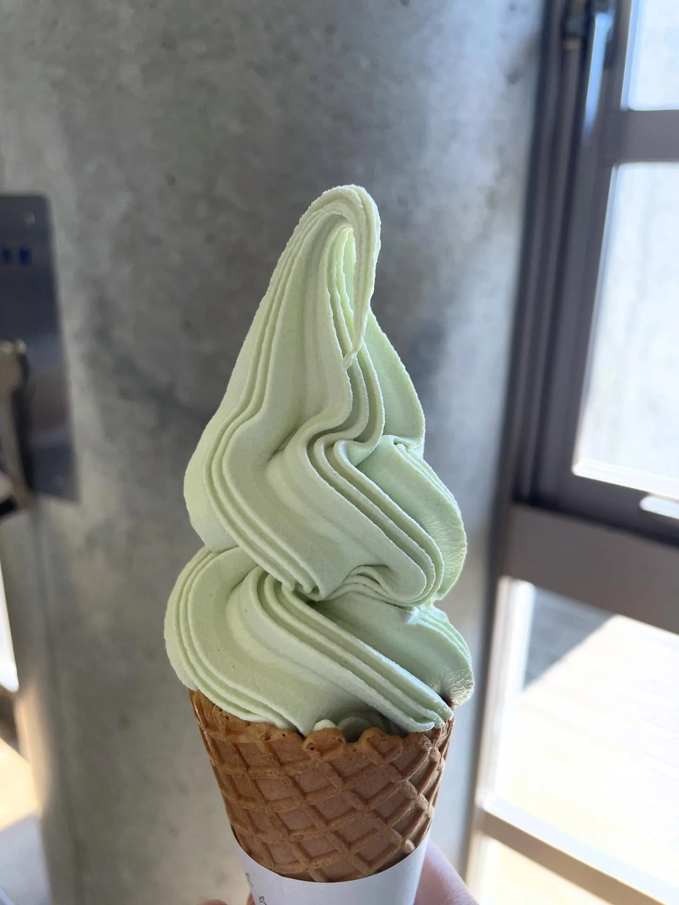
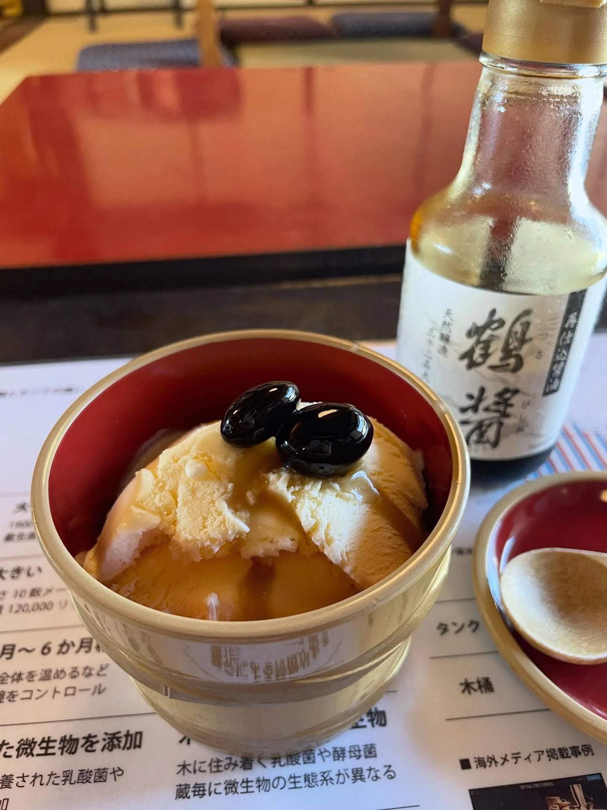

芸術祭のない瀬戸内海の小豆島
次のワークエクスチェンジ先（姫路）に行く前に、今年はちょうど久しぶりに瀬戸内国際芸術祭があったので、ついでに小豆島へ旅行に行きました。
フェリーに乗ったことがなくて、乗ってみたかったので、最初は神戸から乗るつもりでした。宿泊費を節約するために夜行の便も考えたのですが、ちょうどフェリーのメンテナンスの日だったので、姫路港から乗ることにして、3時間かけて向かいました。小豆島のバスは本数が多くなく、乗り換えもあるので、11時すぎに姫路から船で出発して、小豆島の宿に着いたのは、もう午後4、5時でした。
Sen Guesthouse
選んだ宿は、住居兼民宿で、キッチンもリビングもベランダもあって、とても居心地よく飾られていました。少し歩くと海辺のハンモックもあります。ドミトリー部屋も4ベッドだけで、この数日はルームメイトにまったく邪魔されず、とても静かで快適に過ごせました。
1週間ぶっ続けの密度の高い交流を終えたばかりだったので、料理をしたり、気ままに散歩したりするのが、私にとって本当にいちばんの休息でした。毎日、朝と夜のごはんを自分で作って、ここ数日の外出しての旅行でさえ、私にはまだヘビーすぎるくらいでした。
最後の夕方に、ほかの宿泊客のブラジル人の女の子、ハンナと知り合って、いっしょに足湯をして、夕食を分けあって、小豆島にお別れしました。ほかの日にはバスを待っていたら、退職して小豆島に移住してきたご夫婦に、車に乗せてもらいました。一期一会の、かわいくて親切な人たち、ありがとうございました。

メモ
- 1人4,000円〜
- 二十四の瞳映画村の近くで、ちょっとアクセスしにくいです（バスの運転手さんに民宿の前で止めてもらえるので、もう十分便利ですが）。家まで、2階分くらいの階段を上ります。
- 更新：この夏（2026年）、階段になんと荷物用のリフトがついていました……！
- @senguesthouse
今は芸術祭じゃないんだって
笑い話ですが、着いた日の夜、翌日どこに遊びに行くか計画していて、やっと今は芸術祭の期間じゃないことに気づきました。（瀬戸内国際芸術祭は春・夏・秋の3期に分かれていて、各期のあいだには展示のない期間があります。）とんだ勘違いでしたが、行ける場所は思ったより多くて（ただし、ふつうだなと思う場所もありました）、島の遠いところには行きませんでした（本当に疲れていたので）。
行くべき観光スポットにはひととおり行きましたが、いちばん好きだったのは、やっぱり路地をふらふら歩くことと、ぼーっとすることです。
迷路のまちとエンジェルロード
土庄町にあって、「土渕海峡」のすぐそばです。路地に入りこむのが好きな私は、とても気に入りました！ このエリアには、芸術祭の作品がいくつかあって（私が行ったときは全部閉まっていましたが）、レストランやカフェもたくさんあって、食事や休憩にぴったりです。海辺のスポット「エンジェルロード」に向かう途中に通った西光寺も好きでした（2026年5月に、北港朝天宮から媽祖の分霊をお迎えしたそうです！ すごい！）。高いところから、町と海を見渡せます。


二十四の瞳映画村、オリーブ公園
二十四の瞳映画村：映画の撮影のために建てられて、そのまま残された村で、昭和初期の漁村の雰囲気を体験できます。私はすでにいろんな田舎や、いろいろな建物を見てきたので、魅力は普通でした。
小豆島オリーブ公園：写真を撮ったり、いろんなおみやげを買ったりするのにぴったりで、観光客の8割は（台湾語を話す）台湾人です XD 実写版の映画『魔女の宅急便』のロケ地なので、いっしょに写真を撮れる設備もあって、（魔法の）ほうきも無料で借りられます。

メモ
- 二十四の瞳映画村：8:30〜17:00、1人1,000円
- 小豆島オリーブ公園：8:30〜17:00
ヤマロク 木桶醤油
小豆島の食べものといえば、主な特産品はオリーブオイル、そうめん、醤油です。ソフトクリームのオリーブオイル味、そうめん味、醤油味は全部食べました。醤油は「ヤマロク醤油」で食べました。ふつうのミルク味のソフトクリームに、直接醤油と黒豆をかけただけですが、意外と合って、気に入りました！ 醤油が1本、自由に使えるように置いてありました。
昔ながらのやり方で、杉で作った巨大な木桶で醤油を醸造しています。中に入って見学したり、木桶と記念撮影したりできて、簡単なガイドもあって、すべて無料です。だから、帰るときには「醤油を買わないといけない気がする」というプレッシャーがあります（私は気が小さいので……）。でも、それでも十分価値があると思いましたし、伝統を守るのは本当に大変なことだと感じました。

メモ
- 9:00〜17:00
- バス停から徒歩20分、醤油は750円から。日本家屋が大きくて、アイスを食べて休憩できます。
森國酒造
もう1つ、記録しておきたいのが、小豆島でただ1軒の酒蔵「森國酒造」です。休める場所がほしくて、ほかに選択肢もなかったので来ました（いいかげん！）。着いたのはもう午後4時で、日本酒を1杯とデザートだけをいただきました。酒粕パンや料理を味わう機会がなかったのが残念ですが、空間の雰囲気はよくて（しかも、お客さんは私一人だけ……！）、すてきな休憩時間になりました。
メモ
- 9:00〜17:00、木曜定休。パン屋さんは火・水・木曜定休
- だれか、ここのパンを私の代わりに味わってください！！！
まとめ
全体として、小豆島でバカンスをした3、4日は、とてもチルで、居心地のいい宿が、すばらしい第一印象をくれました。島のスポットは、観光地っぽいものも、伝統的なものも、自然のものもあって、毎日、違う角度から違う海の景色が見られます。おすすめです。（語彙が貧しい）
キーワード香川瀬戸内海小豆島オリーブ醤油Sen Guesthouse二十四の瞳映画村森國酒造ヤマロク醤油